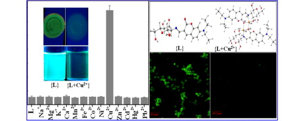

Department of chemistry
My publications

1. Areti, S.; Nage, R.; Rao, C. P.* Glyco‐Conjugate Design and Demonstration as
Receptors
for the Species of Biological, Ecological and Medical Importance: Support
from Spectroscopy and Microscopy.
ChemistrySelect, 2021, 6, 9, 2051-2079. (Impact
factor= 1.8)
Selenocysteine vs Cysteine: Tuning the Derivatization on Benzenesulfonyl Moiety of a Triazole
Linked Dansyl
Connected Glycoconjugate for Selective Recognition of Selenocysteine and the Applicability of the
Conjugate
in Buffer, in Serum, on Silica Gel, and in HepG2 Cells
2.Thiourea linked peracetylated glucopyranosyl–anthraquinone conjugate as reversible
ON–OFF eceptor for fluoride in acetonitrile
3. Water-Soluble 8-Hydroxyquinoline Conjugate of Amino-Glucose As Receptor for La3+ in HEPES Buffer,
on Whatman Cellulose Paper and in Living Cells
4 .Coumarine–imino–C2-glucosyl conjugate as receptor for Cu2+ in blood serum milieu,
on silica gel sheet and in Hep G2 cells and the characterization of the species of recognition

5. Synthesis, Structure, and Hg2+-Ion-Sensing Properties of Stable Calixazasmaragdyrins
6. Glyco-conjugate as selective switch-on molecule for Hg2+ in the presence of albumin proteins,
blood serum milieu and on silica gel solid support
7. Optimizing the Electron-Withdrawing Character on Benzenesulfonyl Moiety Attached to a Glyco-Conjugate
to Impart Sensitive and Selective Sensing of Cyanide in HEPES Buffer and on Cellulose Paper and Silica Gel Strips
8.A water soluble glucopyranosyl conjugate as a selective and reactive probe for cysteine in a buffer and
its application to living cells

9 .Pyrenyl-imino-C2-glucosyl conjugate: synthesis, characterization, and ratiometric and
reversible OFF–ON receptor for Hg2+
10. Triazole-Linked Quinoline Conjugate of Glucopyranose: Selectivity Comparison among Zn2+, Cd2+, and Hg2+
Based on Spectroscopy, Thermodynamics, and Microscopy,
and Reversible Sensing of Zn2+ and the Structure of the Complex Using DFT
11. Role of Aromatic Moiety in the Probe Property toward Picric Acid: Synthesis, Crystal Structure, Spectroscopy, Microscopy, and
Computational Modeling of a Knoevenagel Condensation Product of d-Glucose
12. Glyco-Conjugate Design and Demonstration as Receptors for the Species of Biological, Ecological and Medical Importance:
Support from Spectroscopy and Microscopy
13.Integrating glucosyl moiety with the reporting group through linker resulting in conjugates suitable for ion and molecular recognition:
Critical analysis of our own demonstrations.

14. Tuning glycoconjugates to acquire selectivity for toxic Hg2+ ion.

4 .Coumarine–imino–C2-glucosyl conjugate as receptor for Cu2+ in blood serum milieu,
on silica gel sheet and in Hep G2 cells and the characterization of the species of recognition